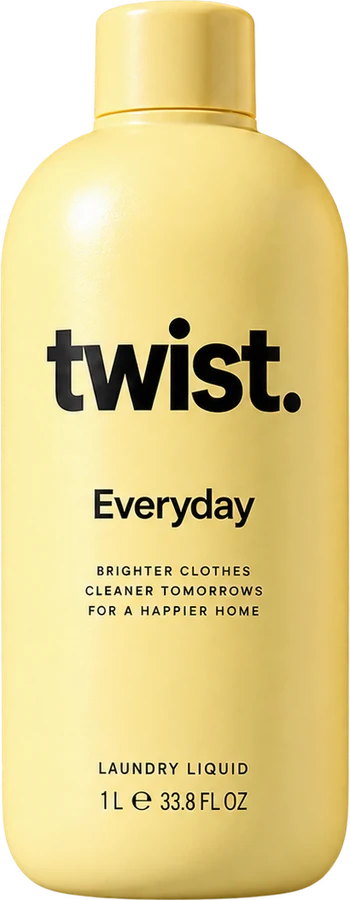
The everyday wash that gets clothes clean without wearing them out. For cottons, blends, bedsheets and towels, in any machine.
Your favourite T-shirt didn't wear out. It was washed out.
Most detergents are judged on how clean clothes look after one wash, not on what fifty washes do to them. Harsh formulas and hard water slowly strip dye, raise fuzz and break fibres, so clothes fade, grey, pill and thin long before you're done with them.
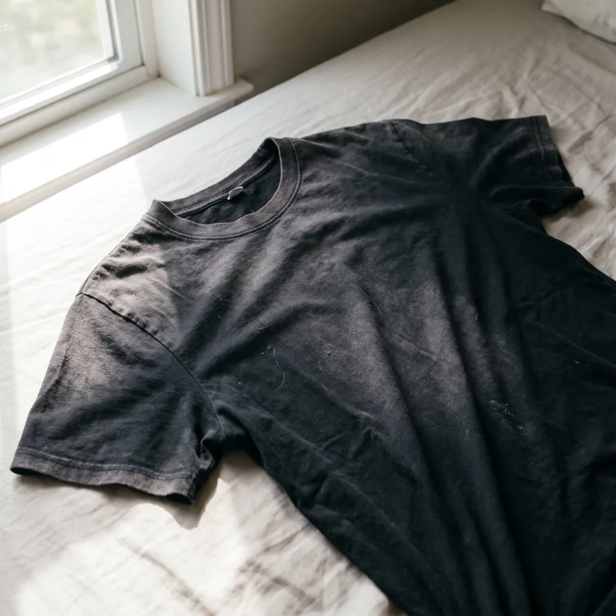
FadingColours go dull and patchy.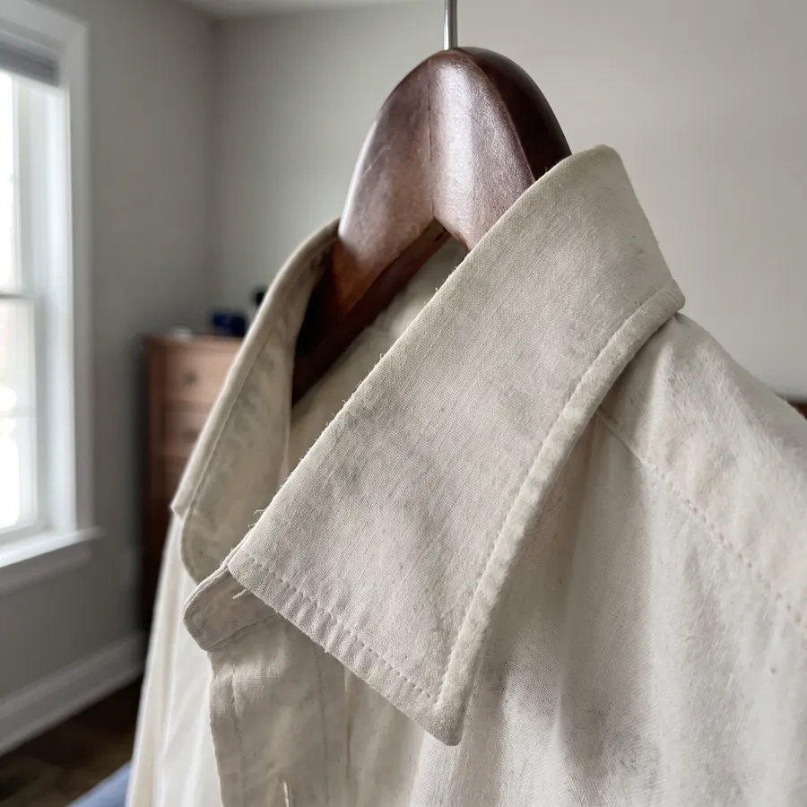
GreyingWhites turn dingy.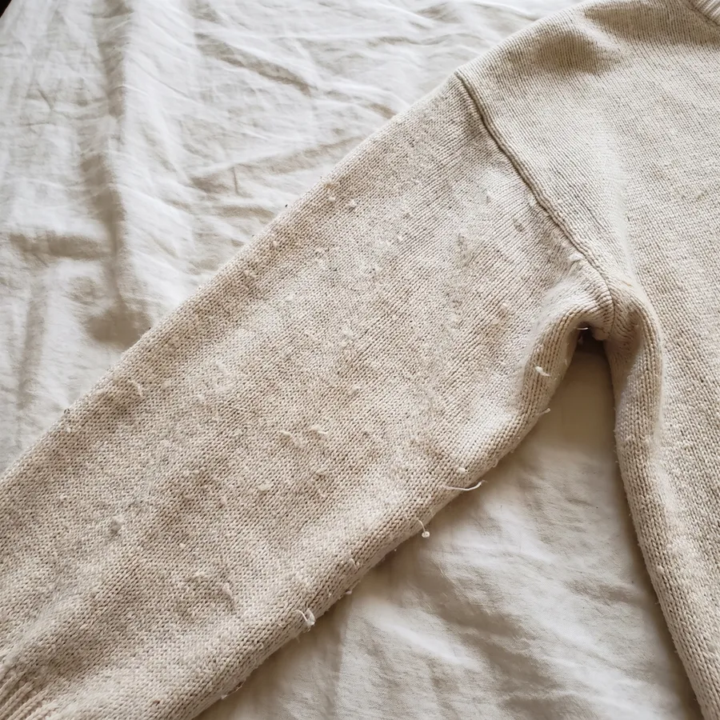
PillingFuzz balls up on the surface.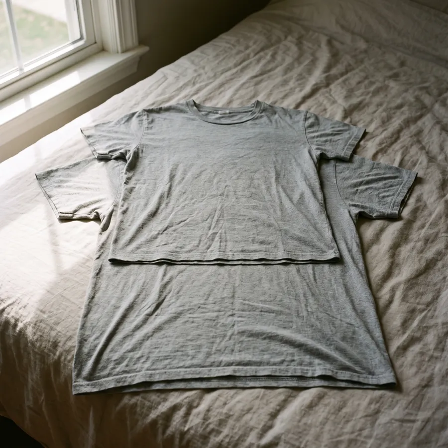
ShrinkageClothes get shorter and tighter.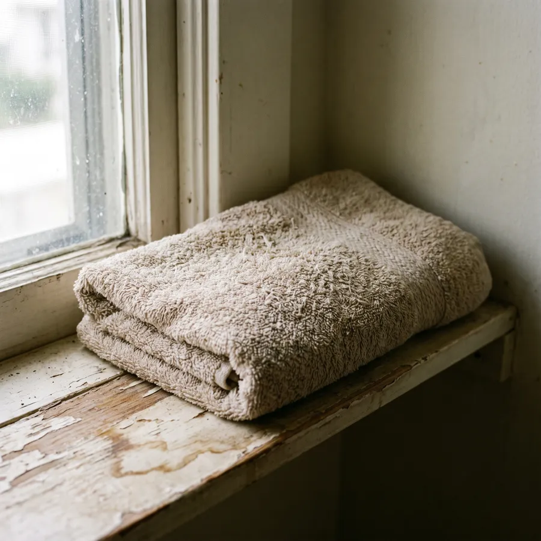
StiffnessTowels turn rigid and crusty.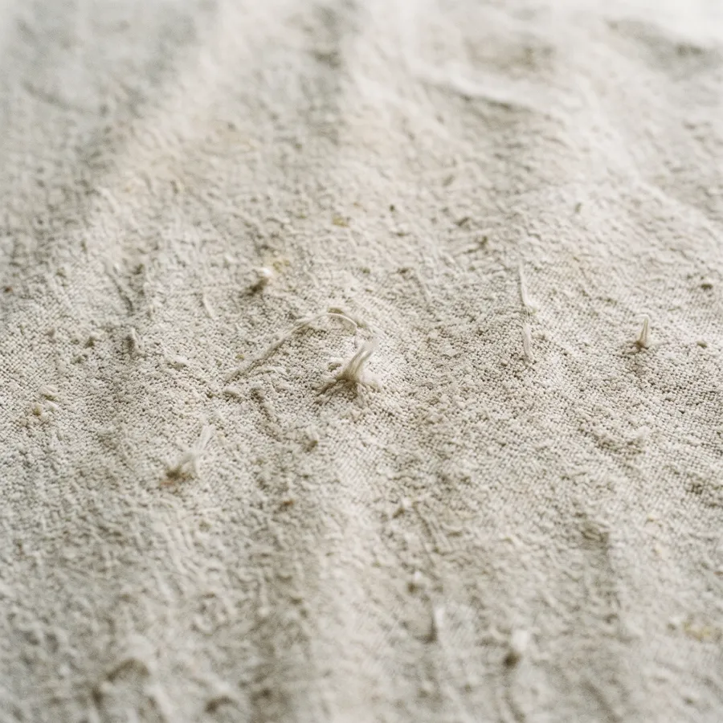
Harsh feelFabric feels rough on skin.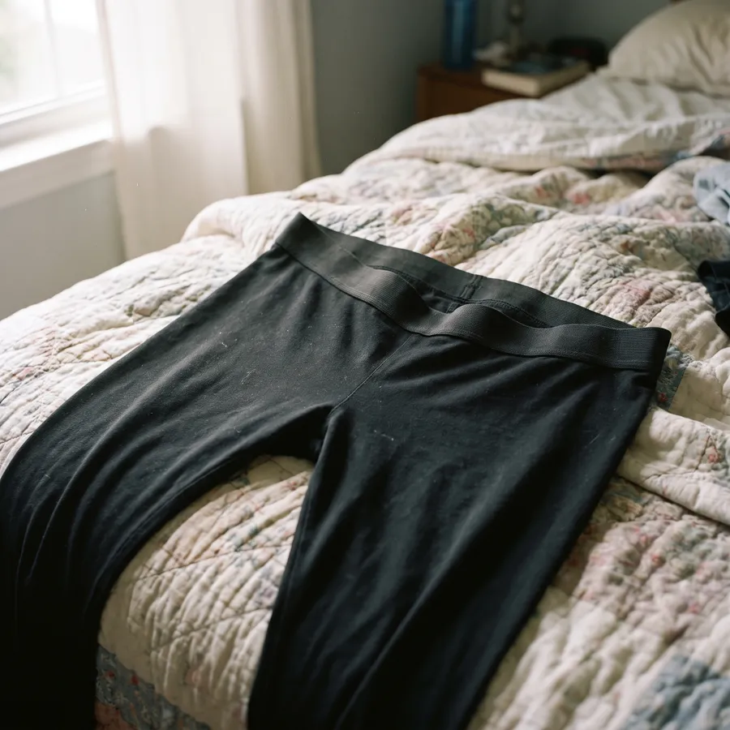
Lost stretchWaistbands and leggings sag.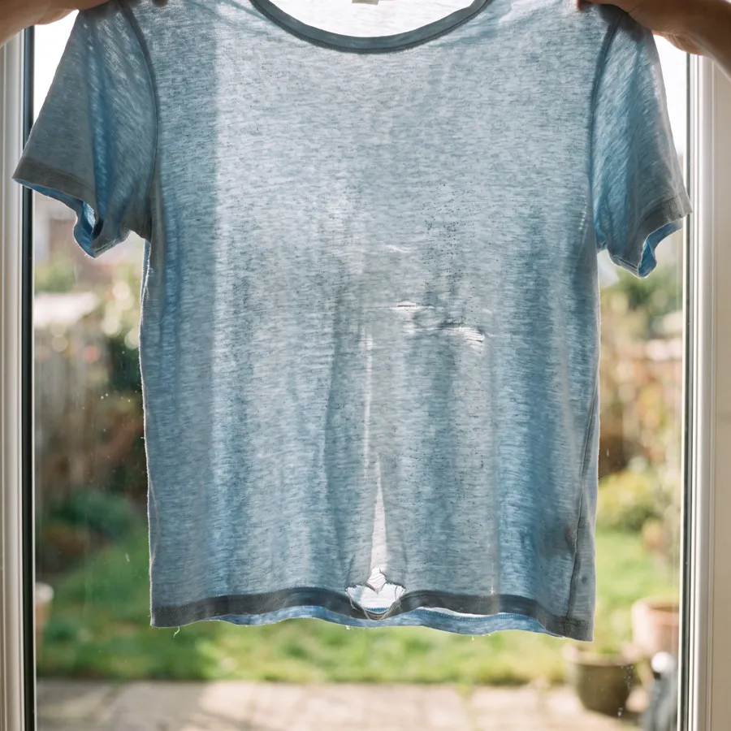
Weak fibresFabric thins until it tears.A single 6 kg wash of acrylic clothes can shed over 700,000 fibres. Napper & Thompson, Marine Pollution Bulletin, 2016.
Most detergents clean hard and leave the fabric to fend for itself. Everyday Wash is built to clean just as well while looking after the fibres it's cleaning.
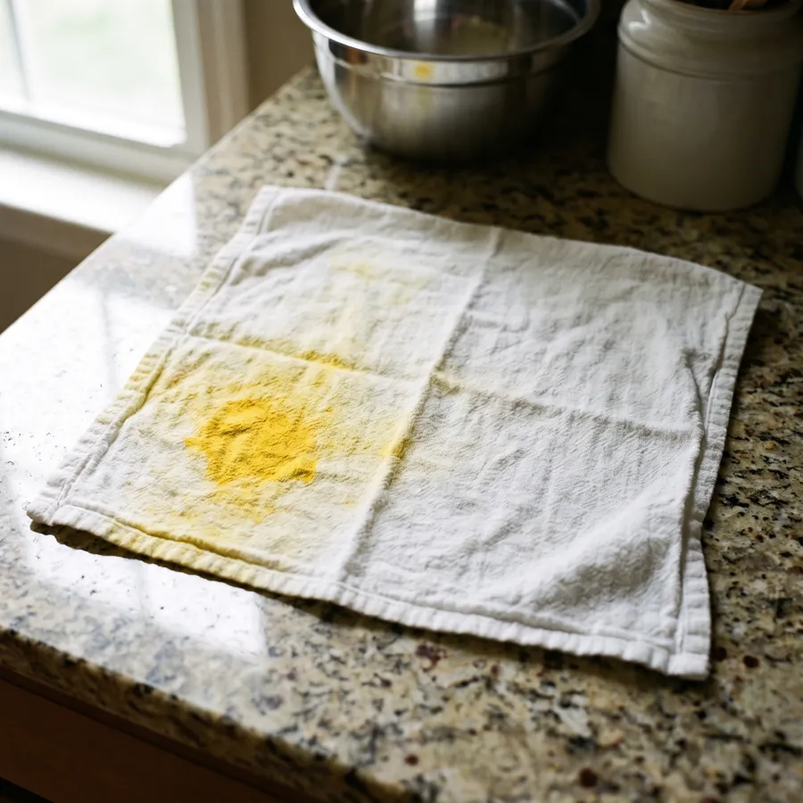
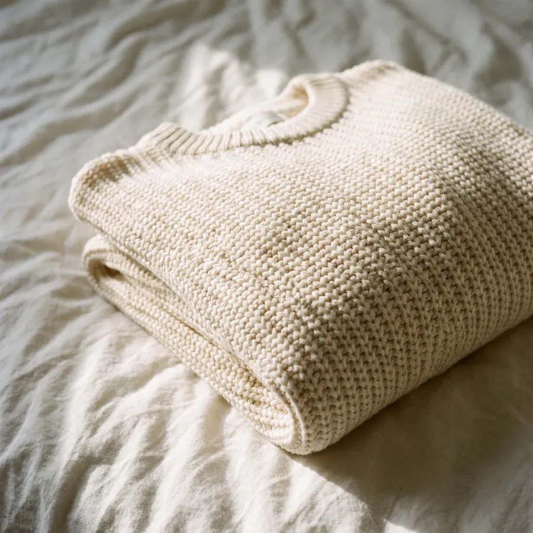
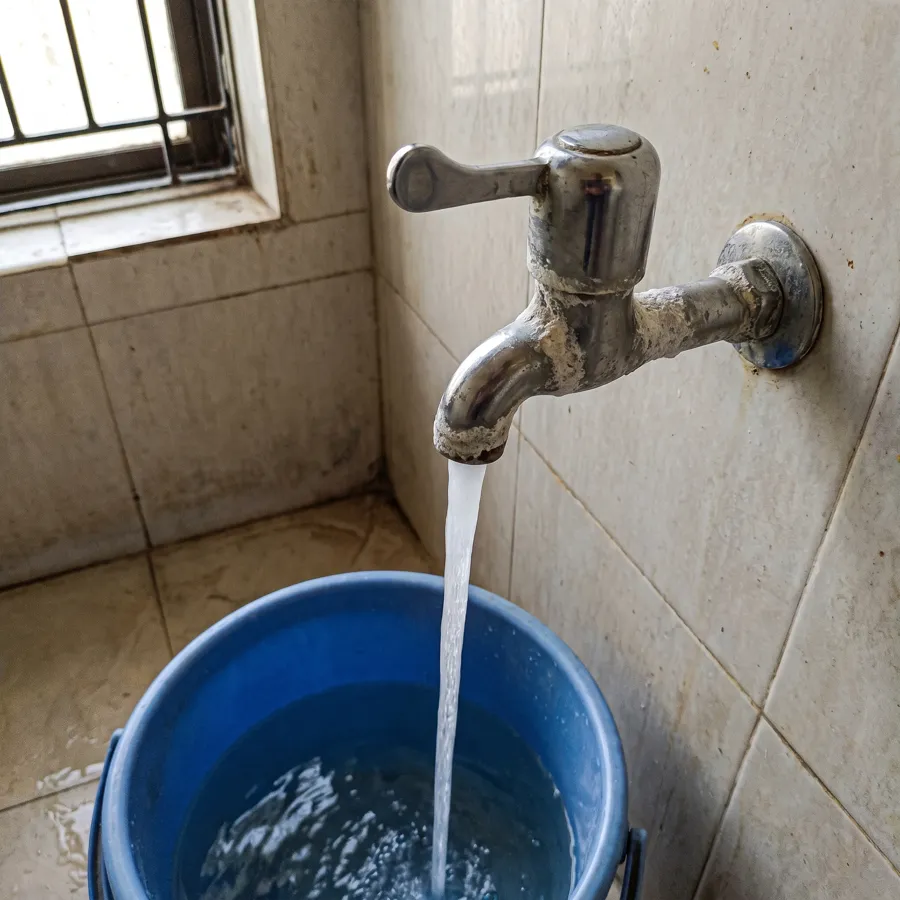
Yes. Everyday Wash is made to stop whites greying and colours fading, so you can wash them the same way.
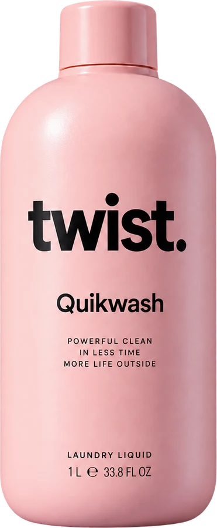
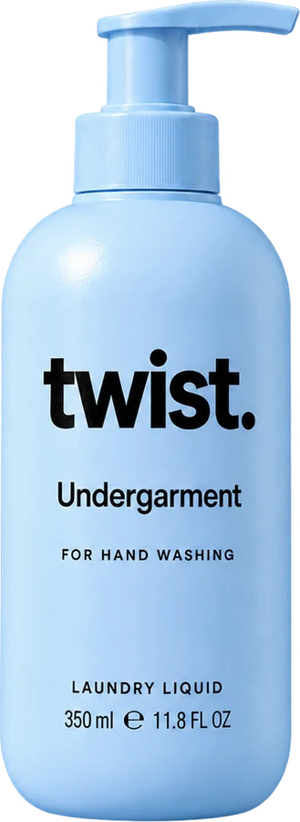